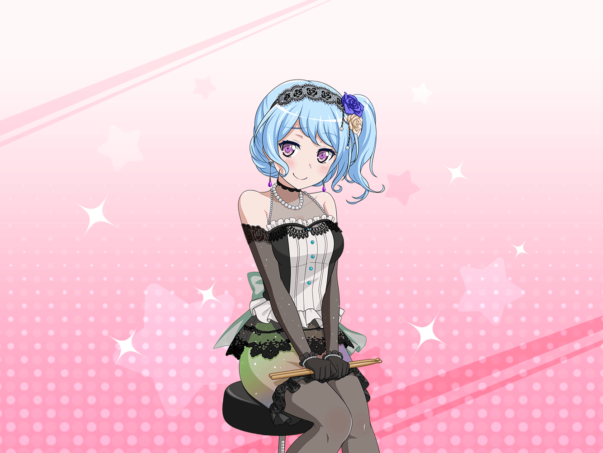

花咲川女子学園 校門前
花音
あっ、美咲ちゃん！
今帰り？
美咲
あ、花音さん。はい、今部活が終わったところなので
花音
お疲れさま。
ふう……燐子ちゃん、大丈夫かなあ
美咲
なんだか、燐子先輩らしくない感じでしたよね。
運動部まで体験入部して……
花音
そうだね。
燐子ちゃんなりに何か考えがあって
部活を見に来たんだろうけど……
花音
あ、でもね。茶道のお点前はすごかったんだよ！
顧問の先生がすごく褒めるくらい！
美咲
なんかそれ、想像つくかも。
運動はちょっと苦手そうでしたけど、文化系の
部活は合いそうですよね
花音
うん。ぜひうちの部に！ って勧誘したんだけど、
ちょっと強引だったかも……燐子ちゃん、勧誘に
驚いちゃって……
美咲
あはは。勧誘する側も、燐子先輩の気持ちも
どっちもわかるな〜
美咲
けど、テニスをやってる時も思ったんですけど、
燐子先輩、まわりの期待とか応援を
極端に気にしちゃうタイプなのかもしれませんね
花音
そうなのかな？
美咲
テニスの時は、紗夜先輩がボールを拾ってくれたことを
すごく申し訳なさそうにしてたし……
せっかく教えてくれたのに何もできなくて〜って
花音
そうだったね。
もっと燐子ちゃんの気持ち、考えるべきだったなあ……
美咲
テニス部のあと、紗夜先輩に連れられて、
剣道部に行ったみたいだけど、どうなったかなあ……
イヴ
ミサキさーん！ カノンさーん！
花音
イヴちゃん！
イヴちゃんも、今部活終わったところ？
イヴ
はいっ！ 剣道部は終わったのですが……
あの、お二人共、今からリンコさんを
応援しに行きませんか？
美咲
えっ？ どういう事？
イヴ
先程、リンコさんが弓道場で頑張っているのを
見かけたんです。サヨさんに弓道を教えてもらっている
みたいでした
イヴ
リンコさん、今まで以上にすごく
真剣な表情をしていて……
美咲
応援かあ……どうだろうなあ
イヴ
ダメ、ですか……？
美咲
ううん、ダメじゃないけど。今ちょうど話してたんだけど、
燐子先輩、応援されたりすると逆に意識しちゃったり
しそうだなと思って
美咲
それで、燐子先輩の集中力が削がれちゃったら
申し訳ないし……
花音
そうだね。燐子ちゃんが一生懸命やってるなら
なおのこと……
イヴ
で、では、声を出さずに静かに応援するのは
どうでしょうか？ 邪魔はしないようにするので！
イヴ
私……どうしてもリンコさんを応援したいんです！
花音
私も、様子を見に行ってみたいな。
燐子ちゃんのこと、少しだけ心配だし
イヴ
ミサキさんは……どうですか？
美咲
まあ、あたしも心配は心配……かな
イヴ
それじゃあ……！
花音
美咲ちゃん、行こうっ！
そーっと、様子を見に行ってみようよ
美咲
わかりました。行きましょう
花音
うんっ！ それじゃあ……弓道場はあっちだよね。
行こう！
美咲
あ、花音さん、そっちじゃなくて、逆〜……！